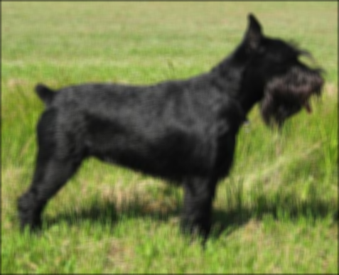

!wget -q https://upload.wikimedia.org/wikipedia/commons/3/3b/BlkStdSchnauzer2.jpg -O dog.jpg
!file dog.jpgdog.jpg: JPEG image data, JFIF standard 1.01, aspect ratio, density 1x1, segment length 16, baseline, precision 8, 477x387, components 3

CUDA threads are organized in a two level hierarchy
Both grids and blocks can be 3D arrays (with x, y, z dimensions). You specify these dimensions when launching a kernel. These variables can be wrapped in dim3 type. As the no of threads inside a block should not exceed 1024, we have to obey the constrain blockDim.x * blockDim.y * blockDim.z ≤ 1024. The ordering of the attributes in the dim3 object is lowest dim first i.e. (x, y, z). Note: diagrams often label dimensions in reverse order (z, y, x).
The built-in variables are:
blockIdx — the block’s coordinates in the gridthreadIdx — the thread’s coordinates within its blockgridDim — dimensions of the gridblockDim — dimensions of each blockEach have 3D attributes.
Important limits: - Max 1024 threads per block (total across all dimensions) - gridDim.x can go up to 2³¹-1 - gridDim.y and gridDim.z can go up to 65,535 - Index ranges: blockIdx.x ranges from 0 to gridDim.x - 1. Same pattern for y and z
The data itself is ordered in row-major order in the memory( C/C++/Python use row-major). This affects how threads are allocated and how we access them. 2D arrays are “flattened” to 1D in memory. This abstraction is substituted with simple indexing. Index in the 1D space can be found out by following formula : index = row * width + col. Where row and col are the global coordinates of the thread in the 2D data space.
row = blockIdx.y * blockDim.y + threadIdx.y
col = blockIdx.x * blockDim.x + threadIdx.xWhen doing operation in 2D or 3D space in GPU, the above constraint comes into play. If the 2D array size is smaller respective to the assigned space inside the GPU there would be many extra threads at the end. Below formula is used to allocate the grid size:
gridDim.x = ceil(width / blockDim.x)
gridDim.y = ceil(height / blockDim.y)One has to build proper boundary condition to prevent invalid threads from accessing out-of-bounds memory. The boundary check pattern:
if row < height and col < width:
# do work!wget -q https://upload.wikimedia.org/wikipedia/commons/3/3b/BlkStdSchnauzer2.jpg -O dog.jpg
!file dog.jpgdog.jpg: JPEG image data, JFIF standard 1.01, aspect ratio, density 1x1, segment length 16, baseline, precision 8, 477x387, components 3from PIL import Image
img = Image.open('dog.jpg')
img.size(477, 387)In numpy the image is order by height, width then channel.
W, H = img.size
#im = img.resize(( W, H))
im = img
imimn = np.array(im)
assert imn.shape == (H, W, 3)
imn.shape, imn.dtype((387, 477, 3), dtype('uint8'))The most common formula for converting an RGB pixel to grayscale is a weighted average that accounts for human perception of brightness:
Gray = 0.299 × R + 0.587 × G + 0.114 × BThis gives more weight to green (we’re most sensitive to it) and less to blue (least sensitive).
def grayscale_cpu(inp, out, height, width):
#height, width = inp.shape[:2] this will be additional look up
for row in range(height):
for col in range(width):
if row < height and col < width:
# do work
out[row, col] = 0.21 * inp[row, col, 0] + 0.72 * inp[row, col, 1] + 0.07 * inp[row, col, 2]out_c = np.zeros_like(imn, dtype=np.float32)
out_c.shape, out_c.dtype((387, 477, 3), dtype('float32'))with timer():
grayscale_cpu(imn, out_c, H, W)1139.7589 msdef np2im(arr): return Image.fromarray(arr.astype(np.uint8))
np2im(out_c)Creating output array in the GPU.
out_d = cuda.device_array((H, W), dtype=np.float32)
out_d.shape, device(out_d)((387, 477), 'cuda')Moving image to the GPU.
d_im = cuda.to_device(im)
d_im.shape, device(d_im)((387, 477, 3), 'cuda')block_dim = (32, 32)
grid_dim = (dim(W, block_dim[0]), dim(H, block_dim[1]))
grid_dim(15, 13)@cuda.jit
def grayscale_kernel(inp, out, height, width):
#height, width = inp.shape[:2] this will be additional look up
col = cuda.threadIdx.x + cuda.blockIdx.x * cuda.blockDim.x
row = cuda.threadIdx.y + cuda.blockIdx.y * cuda.blockDim.y
if row < height and col < width:
# do work
out[row, col] = 0.21 * inp[row, col, 0] + 0.72 * inp[row, col, 1] + 0.07 * inp[row, col, 2]with timer():
grayscale_kernel[grid_dim, block_dim](d_im, out_d, H, W)1283.8546 msout = out_d.copy_to_host()
device(out)'cpu'np2im(out_c)
assert test_close(out, out_c[:, :, 0])A blur effect is created by convolving an image with a blur kernel (also called a filter). The basic idea: each pixel becomes an average of itself and its neighbors.
Simple Box Blur Kernel (3×3):
1/9 * | 1 1 1 |
| 1 1 1 |
| 1 1 1 |This averages all 9 pixels in a 3×3 neighborhood equally.
BLUR_SIZE = 3
ks = BLUR_SIZE * 2 + 1
K = np.ones((ks, ks), dtype=np.float32) / ks ** 2
Karray([[0.02040816, 0.02040816, 0.02040816, 0.02040816, 0.02040816,
0.02040816, 0.02040816],
[0.02040816, 0.02040816, 0.02040816, 0.02040816, 0.02040816,
0.02040816, 0.02040816],
[0.02040816, 0.02040816, 0.02040816, 0.02040816, 0.02040816,
0.02040816, 0.02040816],
[0.02040816, 0.02040816, 0.02040816, 0.02040816, 0.02040816,
0.02040816, 0.02040816],
[0.02040816, 0.02040816, 0.02040816, 0.02040816, 0.02040816,
0.02040816, 0.02040816],
[0.02040816, 0.02040816, 0.02040816, 0.02040816, 0.02040816,
0.02040816, 0.02040816],
[0.02040816, 0.02040816, 0.02040816, 0.02040816, 0.02040816,
0.02040816, 0.02040816]], dtype=float32)def blurr_cpu(inp, out, K, BLUR_SIZE):
height, width = inp.shape[:2]
for row in range(height):
for col in range(width):
for i in range(-BLUR_SIZE, BLUR_SIZE + 1):
for j in range(-BLUR_SIZE, BLUR_SIZE + 1):
n_row = row + i
n_col = col + j
if 0 <= n_row < height and 0 <= n_col < width:
for k in range(3):
out[row, col, k] += inp[n_row, n_col, k] * K[i + BLUR_SIZE, j + BLUR_SIZE]out_c = np.zeros_like(imn, dtype=np.float32)
with timer():
blurr_cpu(imn, out_c, K, BLUR_SIZE)24793.1270 msassert out_c.shape == imn.shapenp2im(out_c)
@cuda.jit
def blurr_kernel(inp, out, K, height, width, BLUR_SIZE):
#height, width = inp.shape[:2] this will be additional look up
col = cuda.threadIdx.x + cuda.blockIdx.x * cuda.blockDim.x
row = cuda.threadIdx.y + cuda.blockIdx.y * cuda.blockDim.y
if row < height and col < width:
# Initialize the output pixel's color channels to 0.0 before accumulation
for k in range(3):
out[row, col, k] = 0.0
# do work
for i in range(-BLUR_SIZE, BLUR_SIZE + 1):
for j in range(-BLUR_SIZE, BLUR_SIZE + 1):
n_row = row + i
n_col = col + j
if 0 <= n_row < height and 0 <= n_col < width:
for k in range(3):
out[row, col, k] += float(inp[n_row, n_col, k]) * K[i + BLUR_SIZE, j + BLUR_SIZE]out_d = cuda.device_array((H, W, 3), dtype=np.float32)
out_d.shape, device(out_d)((387, 477, 3), 'cuda')d_K = cuda.to_device(K)
with timer():
blurr_kernel[grid_dim, block_dim](d_im, out_d, d_K, H, W, BLUR_SIZE)213.6875 msnp2im(out_d.copy_to_host())assert test_close(out_d.copy_to_host(), out_c)Wm, Hm = 120, 140
Wn, Hn = 140, 160
assert Hm == WnM = np.random.randn(Wm, Hm)
N = np.random.randn(Wn, Hn)
M.shape, N.shape((120, 140), (140, 160))P1 = np.zeros((Wm, Hn), dtype=M.dtype)
P1.shape(120, 160)def seq_mult():
for i in range(Wm):
for j in range(Hn):
temp = 0
for k in range(Wn):
temp += M[i,k] * N[k,j]
P1[i,j] = tempwith timer():
seq_mult()979.2057 msM_d = cuda.to_device(M)
N_d = cuda.to_device(N)
P_d = cuda.to_device(np.zeros((Wm, Hn), dtype=M.dtype))
device(M_d), device(N_d), device(P_d)('cuda', 'cuda', 'cuda')@cuda.jit
def matmul_kernel(M, N, P, W1, H2, W2):
col = cuda.threadIdx.x + cuda.blockIdx.x * cuda.blockDim.x
row = cuda.threadIdx.y + cuda.blockIdx.y * cuda.blockDim.y
if col < H2 and row < W1:
p_val = 0.
for i in range(W2):
p_val += M[row, i] * N[i, col]
P[row, col] = p_valwith timer():
matmul_kernel[grid_dim, block_dim](M_d, N_d, P_d, Wm, Hn, Wn )128.3623 msassert test_close(P1, P_d.copy_to_host())| Operation | CPU Time (ms) | GPU Time (ms) |
|---|---|---|
| Grayscale Conversion | 1139.7589 ms | 1283.8546 ms |
| Blur Filter | 24793.1270 ms | 213.6875 ms |
| Matrix Multiplication | 979.2057 s | 128.3623 ms |
GPU are faster for the problems wrt the CPU in Blur Filter and Matrix Multiplication. But for Grayscale Conversion CPU performs marginally better than GPU.